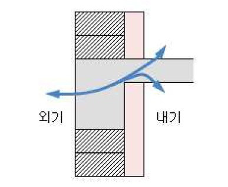
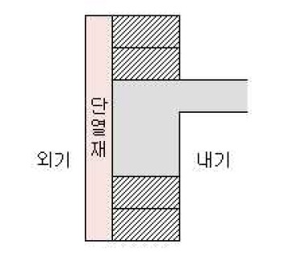

열교(Thermal Bridge)란 설계나 시공상의 문제로 건물의 특정 지점에서 단열성능이 갑자기 떨어질 때, 그 열적 취약 부위를 통해 열기가 빠르게 빠져나가는 현상을 뜻합니다.
국내 아파트나 일반 건축물의 기존 단열공법은 내단열 방식으로, 건물 내에 단열재를 시공하고, 건물 바깥에 콘크리트가 오픈되어 있는 형태를 가지는데,
|  공동주택 벽-슬라브 접합부에서의 전열현상 (내단열) |
이로 인해 벽-슬라브, 벽-벽 접합부 등에서 단열재가 불연속될 수 밖에 없어 필연적으로 많은 열교(thermal bridge)가 발생하여 에너지 손실 및 결로 등의 문제가 발생하고 있습니다. 특히, 국내 공동주택의 경우 난방용 온수배관이 바닥에 설치되므로 구조체를 통한 실외로의 전도 열손실 방지가 매우 중요함에도 불구하고, 내단열 구조는 벽-슬라브 접합부 열교부위를 통해 매우 큰 전도 열손실이 발생할 수밖에 없어 에너지 효율이 매우 떨어집니다. |
| 반면, 외단열의 경우 구조체 실외측에 단열재가 설치되므로 열교 발생을 근원적으로 차단해주며, 콘크리트 벽체 등과 같은 축열재가 단열재로부터 실내측에 위치하므로 난방열 축열에 의한 난방효율 향상이 가능하다는 이점이 있습니다. |
 외단열 |
준불연 가등급 EPS 단열재 DK보드
건축용 / 외단열용 / 판넬용
문의 1855-2240